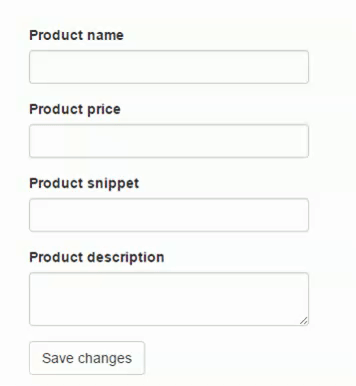

Data Validation (Input data validate: duyệt/kiểm tra dữ liệu đầu vào) có ý nghĩa quan trọng trong các ứng dụng. Việc validate data không chỉ giúp người dùng có 1 tiêu chuẩn nhập liệu 1 cách tốt hơn, mà còn giúp developer giảm thiểu được lỗi trong quá trình xử lý.
Validate data nên thực hiện ở cả 2 tầng là front-end và back-end, như vậy thì (giả sử) người dùng có hack/cheat để vượt quá tầng front-end (ví dụ disable javascript), thì vẫn còn 1 chốt chặn ở server nữa.
Trong bài này, mình sẽ giới thiệu một số cách sử dụng validation cơ-bản-nhất trong asp.net mvc, sử dụng data annotation và 1 thư viện validate rất cool do 1 dev của Việt Nam tạo ra, đó là bootstrap validator.
bootstrap validator (bv) là tiền thân của formvalidation. Sự khác nhau là bv là 1 phiên bản miễn phí, chỉ sự dụng cho bootstrap. Phiên bản mới nhất hỗ trợ được nhiều css framework khác và tính phí. Trong bài này mình chỉ nói tới bootstrap validator.
Xây dựng 1 layout đơn giản như sau:
html
Tạm thời model sẽ đơn giản thế này thôi.
Hãy cùng xem và phân tích nhé:
Đầu tiên là namespace để sử dụng được các attributes:
using System.ComponentModel.DataAnnotations;
Với mỗi attribute sẽ có các thuộc tính (property) để validate. Ví dụ đối với RequiredAttribute của Name property:
[Required(ErrorMessage = "{0} is required")]
Tham số thứ 0 luôn luôn là tên của property, ở đây là Name. Nếu bạn muốn custom name khi hiển thị, bạn sử dụng kèm với DisplayAttribute bằng cách [Display(Name = "my custom name")].
Quay lại với RequiredAttribute ở trên, khi bạn submit mà chưa nhập tên, kết quả sinh ra sẽ là:
Product name is required
Dễ hiểu phải không! :))
Tiếp, ví dụ như validate số lượng ký tự nhập vào với [StringLength]
[StringLength(250, MinimumLength = 2, ErrorMessage = "{0} must be from {2} to {1} characters")]
Đơn giản mà, rất là gợi nhớ và đầy đủ ngữ nghĩa nên bạn không khó để sử dụng.
Tham khảo tại đây.aspx) để xem các attribute hỗ trợ nhé.
Thêm 1 chút về cách viết annotation, bạn có thể viết tách ra như thế này:
hoặc gộp lại thành 1 như thế này:
bạn có thể viết cách nào mà bạn thấy thích nhất. (Mình thích cách tách ra, dễ nhìn và chỉnh sửa hơn)
Quay trở lại với html 1 chút, nếu bạn chưa biết thì:
@Html.TextBoxFor(m => m.Name, new { @class="form-control"})
là 1 Html helper, trong asp.net mvc (razor syntax) nó được sử dụng để sinh ra html.
Ví dụ như với helper ở trên, kết quả sinh ra sẽ là:

yes, cũng chỉ là 1 input bình thường, nhưng nó có gắn thêm name=Name (Name là tên của property, asp.net mvc model binder sẽ bind dựa vào name). Đây là 1 trong những lợi thế khi sử dụng html helper thay cho html tag bình thường.
À, nếu bạn chưa biết thì sự khác nhau giữa @Html.TextBox() và @Html.TextBoxFor() đó là TextBoxFor sinh ra html có gắn với 1 property cụ thể (nào đó) và được auto-binding vào Action (bạn viết ra là sẽ hiểu). For = For something, ví dụ textbox cho cái Id, textbox cho cái Name...
Không những thế, khi sử dụng kết hợp với data annotation, html sinh ra sẽ có thêm nhiều attributes khác nữa. Với những attribute mình đã thêm ở trên thì kết quả sẽ là:

Nó là các html attributes có dạng data- (data- là custom attribute được sử dụng trong html5). Tới đây thì bạn vẫn chưa sử dụng được các validation rules này (thực ra là bạn có thể sử dụng, chỉ là bạn không thấy hiển thị nếu bị lỗi thôi), bạn phải thêm vào 1 helper nữa để validate, đó là:
@Html.ValidationMessageFor(m => m.Name)
Tương tự như @Html.TextBoxFor, cái này sẽ sinh ra html để thông báo lỗi cho 1 property nếu như property đó phạm lỗi.
Thêm helper cho các property khác:
Bước cuối cùng, trong action bạn kiểm tra model có hợp lệ hay không bằng ModelState
Bạn có thể select danh sách lỗi bằng 1 câu linq đơn giản:
Hoặc hiển thị tất cả các lỗi ra giao diện bằng cách thêm helper:
Kết quả:

Việc hiển thị trên hay dưới, đỏ hay đen, ngang hay dọc thì bạn hoàn toàn có thể quyết định được bằng cách thay đổi html và css cho form nhé.
Ok, validate bằng data annotation cơ bản là thế, 1 số chú ý khác khi sử dụng là:
Link download ở phía trên nhé.
Thư viện bv được sử dụng đi kèm với bootstrap, do đó, hiển nhiên là bạn phải dùng bootstrap chứ không phải framework khác nhé.
Đầu tiên, thêm bv vào _Layout.cshtml

Setup:
1 setup cơ bản như sau:
Trong đó icons là các icons hiển thị tương ứng với trạng thái của control (hợp lệ/không hợp lệ..), và fields là các option tương ứng cho mỗi control (lấy theo tên).
Ví dụ:
<input type="text" name="MyName" />
thì option tương ứng sẽ là:
fields: { MyName: {} }
dễ hiểu phải không :).
Tiếp theo, để setup các rules cho 1 control, sử dụng validators:
Với rules như vậy, ví dụ bạn submit mà không nhập Name, thì rules notEmpty sẽ bị violate, và message Name is required sẽ hiển thị.
Bạn có thể download source code của bv về và xem các ví dụ demo để biết thêm các validators được sử dụng trong bv.
Kết quả:

Chắc chắn là cái website của bạn không chỉ có 1 form rồi, và mỗi lần setup bv cũng..khá tốn thời gian phải không. Vậy thì hãy thêm tí mắm muối để đỡ vất vả hơn nhé.
Phân tích html 1 chút sẽ thấy ngay, mọi html sinh ra bởi html helper của thuộc tính có sử dụng validate đều có 1 điểm chung:

yes, và các rule cũng được thêm theo quy tắc: data-val-[rule], ví dụ như:
<input type="text" data-val="true" data-val-required="Product name is required" />
Vậy thì mình sẽ build 1 đoạn script nhỏ để lấy tất cả các data-val-* attribute trong form, và từ đó build nên các validate rules:
với script build rule như sau:
2 đoạn js trên khá đơn giản (với những người biết js, nếu bạn chưa rành thì cứ tiếp tục xem cho rành nhé :v) nên mình không giải thích (giải thích dài dòng). Trên đây mình chỉ build cho các rules thường gặp nhất, nếu bạn muốn add thêm rule, cứ việc xem html generated ra và thêm vào thôi.
Vậy công việc của bạn bây giờ đơn giản hơn rất nhiều, gọi hàm formValidationBuilder():

and..done! Đơn giản phải không :))
Bootstrap validator rất dễ sử dụng và hiệu quả, tuy nhiên điểm yếu của nó là phụ thuộc vào bootstrap (có lẽ vì vậy mà tác giả mới nâng lên form validation). Nhưng không sao, đa số các back-end site vẫn hay dùng bootstrap mà :))
Ok, kết ngắn gọn: vào đây mà tải source code để nghiên cứu thêm nhé :)